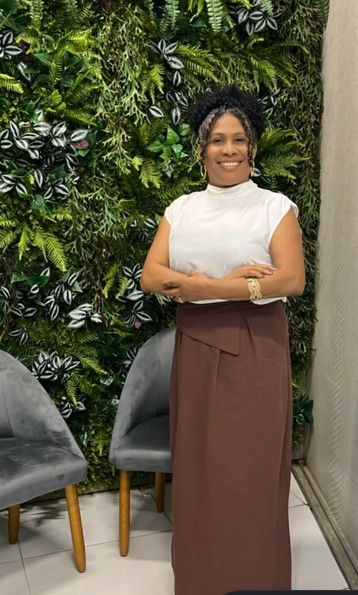
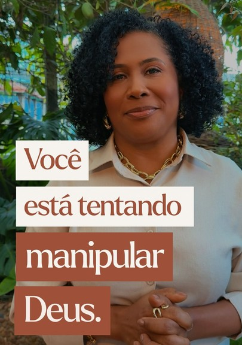
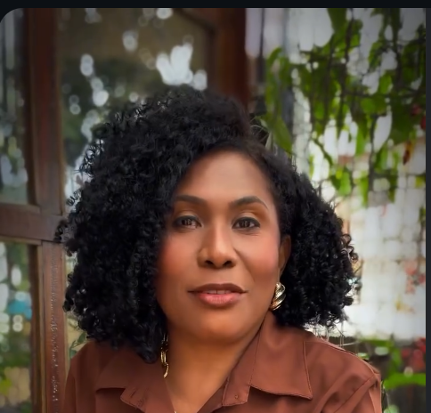

01 / CLÍNICA
Psicanálise
Um espaço de escuta e reflexão para explorar questões emocionais e ampliar o autoconhecimento.
Um convite ao acolhimento, ao autoconhecimento e à transformação — com escuta, propósito e fé.


Sou Andreia Alexandre: psicanalista clínica, pastora, mentora e palestrante. Acredito na importância de um espaço de escuta respeitosa, onde cada pessoa possa olhar para sua própria história, reconhecer seus recursos e construir novos sentidos para sua caminhada.
Minha própria trajetória inclui uma experiência marcante de superação do câncer. Essa vivência faz parte da minha história e fortalece meu compromisso com a esperança, a coragem e o valor de cada novo começo.
Atuação que integra escuta clínica, espiritualidade, orientação e comunicação para diferentes momentos e públicos.
Um espaço de escuta e reflexão para explorar questões emocionais e ampliar o autoconhecimento.
Palavra, acolhimento e fé como parte de uma caminhada de sentido e fortalecimento espiritual.
Acompanhamento e reflexão para reconhecer possibilidades, organizar objetivos e avançar com propósito.
Encontros e mensagens sobre superação, fé, propósito, relações humanas e transformação.
Enfrentar o câncer foi um capítulo importante da minha vida. Não resumo minha história a essa experiência, mas reconheço a força, a fé e os aprendizados que nasceram ao atravessá-la.
Hoje, compartilho minha caminhada com sensibilidade e responsabilidade, para lembrar que ninguém precisa ser definido apenas pelos desafios que enfrentou.
“Coragem não é nunca sentir medo. É seguir em frente, mesmo quando o caminho exige força.”
Cada pessoa tem seu próprio tempo, sua própria história e suas próprias possibilidades. O acolhimento começa pelo respeito a essa singularidade.
Conteúdos sobre fé, comportamento, relações e vida cotidiana no canal de Andreia Alexandre.

Uma chamada para refletir sobre fé, intenção e a maneira como nos relacionamos com aquilo em que acreditamos.
Assistir no canal ↗O destaque utiliza a imagem enviada como referência visual e direciona ao canal oficial. O link individual do vídeo ainda precisa ser confirmado.
Para informações sobre atendimentos, mentorias, convites para palestras e conteúdos, entre em contato pelos canais oficiais.
Chamar no WhatsApp ↗